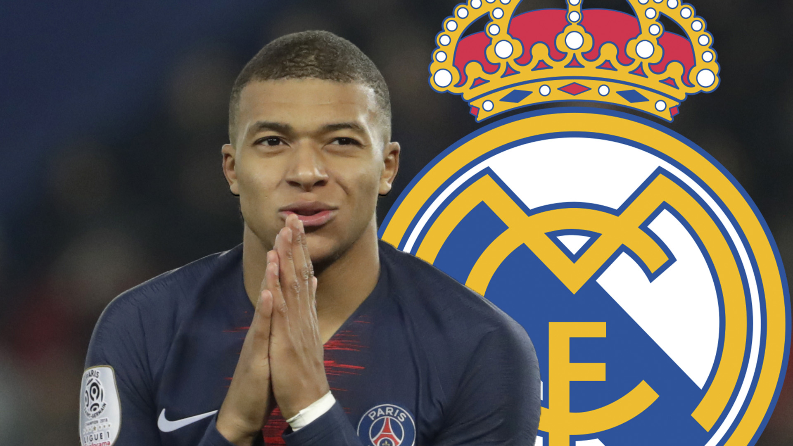

GarridoNews
BIENVENIDOS AL MEJOR SITIO WEB DE NOTICIAS REFERENTES AL FUTBOL

Cristiano Ronaldo regresa a casa
Asi lo hizo oficial las redes sociales del club Manchester United. Se espera la llegada del "Bicho" a Inglaterra para firmar el contrato y hacer el respectivo debut.
SÃ, es una locura y está pasando.
— Manchester United (@ManUtd_Es) August 27, 2021
𝗕𝗶𝗲𝗻𝘃𝗲𝗻𝗶𝗱𝗼 𝗮 𝗰𝗮𝘀𝗮, 𝗿𝗲𝘆 ❤️#MUFC @Cristiano
¿Debutará Messi en el 11 inicial
Por lo pronto el nacido en Rosario se encuentra en los convocados para el próximo encuentro, lo que supondrÃa su debut con la camiseta del PSG.
LOS LEO.. 🇦🇷⚽ pic.twitter.com/ZVN2Q5QVrp
— Paris Saint-Germain (@PSG_espanol) August 28, 2021
Paseo en la ciudad de Manchester
Y mientras el Manchester United se prepara para la llegada de Cristiano, el Manchester city le da un paseo al Arsenal; equipo que viene de mal en peor.
Una actuación âï¸âï¸âï¸âï¸âï¸
— Manchester City (@ManCityES) August 28, 2021
🔵 5-0 🔴 #MCIARS pic.twitter.com/KyfP0AIC6H

¿Qué pasará con Mbappé?
A 3 dÃas de cerrar el mercado de fichajes europeo todo parece indicar que "Donatello" seguirá siendo parte de la escuadra Parisina. ¿Veremos en acción a la MNM?
MNM back in business. #MNM pic.twitter.com/F8hWfo7m5u
— Atomic Flea (@fahad_NIT) August 28, 2021